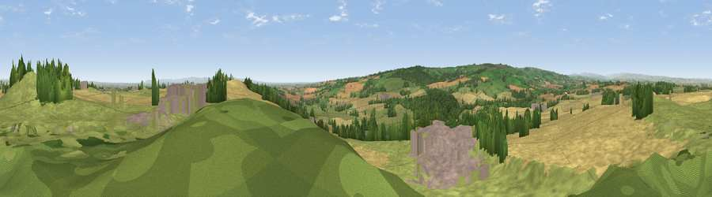

Viewpoint near Gilling West
#7333 in England · top 9% of its area beats it · near Gilling WestThe view, rendered

A 360° render of this exact spot computed from the terrain model, tree cover and land cover — summer colours, afternoon light, calibrated against photographs of famous viewpoints. Real trees, hedges and buildings will differ in detail.
The panorama
Grey silhouette: terrain skyline in each direction (720 bearings, Earth curvature and refraction included). Dashed green: skyline with trees (+15 m) and buildings (+8 m) as obstacles. Blue strip: how far the ground is visible on each bearing.
Where the view opens
Wedge length = distance to the farthest visible ground on that bearing (vegetation-aware). Rings at 10, 25 and 50 km.
What fills the view
43% cropland · 40% grassland · 11% woodland · 6% built-up
Angular shares of the visible panorama (visual magnitude), not map area. Landscape diversity 0.50 (0–1 Shannon).
Key numbers
More beautiful places nearby
The staircase of upgrades: each row has a higher view potential than everything closer. Driving times are estimates from straight-line distance, calibrated against real road routing — check an actual route before setting out.
| Place | Direction | Drive | Score |
|---|---|---|---|
| Diddersley Hill | NNE · 0 km | ~1 min | 67.3 |
| Viewpoint near Gilling West | SSW · 3 km | ~7 min | 72.3 |
| Viewpoint near Barningham | W · 14 km | ~25 min | 72.7 |
| Viewpoint near Barningham | W · 14 km | ~25 min | 74.1 |
| Viewpoint near East Witton | S · 23 km | ~37 min | 74.4 |
| Viewpoint near East Witton | S · 23 km | ~38 min | 77.8 |
| Viewpoint near Ingleby Cross | ESE · 29 km | ~46 min | 78.8 |
| Beacon Hill | ESE · 30 km | ~47 min | 84.7 |
54.46236, -1.73444 · source: screening · position refined by local search. Computed location — check access rights before visiting.